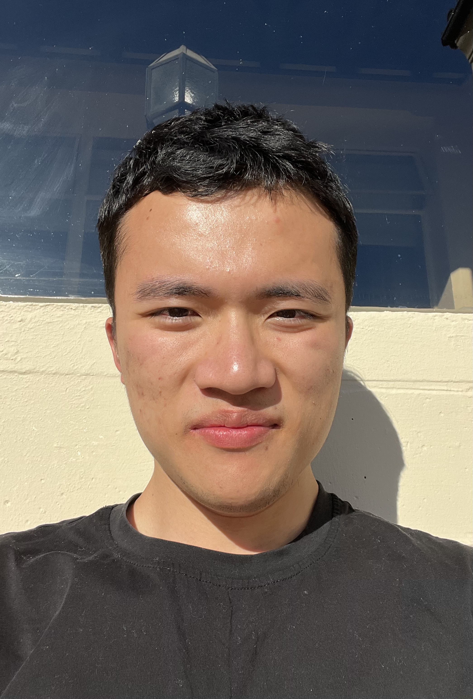
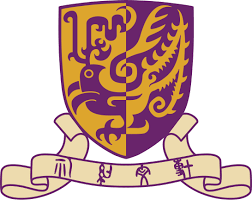
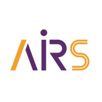

Yimou(Kevin) Wu
4th-year Undergraduate Student
Computer Science and Engineering

Biography
I am a Computer Science and Engineering undergraduate student at The Chinese University of Hong Kong, Shenzhen. My research interests include robotics, machine learning, and brain-computer interfaces.
Feel free to contact me by email if you are interested in discussing or collaborating with me.
News
- [03/2024] Started research assistant position at Prof. Huihuan Qian's lab.
- [01/2024] Joined Development of a Load Generator project.
- [08/2023] Completed summer program at UC Berkeley.
Education
|  |
The Chinese University of Hong Kong, Shenzhen Bachelor of Computer Science and Engineering (CSE)
Sep. 2021 - May 2025 (Expected)
|
|
University of California, Berkeley Summer International Undergraduate Visitor
Jun. 2023 - Aug. 2023
|
Publications
Research Experience
The Chinese University of Hong Kong, Shenzhen
Model Predictive Control (MPC) Development for Robot Manipulators
Supervisor: Prof. Huihuan Qian
Shenzhen, China · Sep 2022 - Present
Development of a Load Generator for Root Cause Analysis Benchmark
Supervisor: Prof. Pinjia He
Shenzhen, China · Mar 2024 - Sep 2024
Electrocorticography (ECoG) and Speech Separation in Brain-Computer Interface Research
Supervisor: Prof. Haizhou Li
Shenzhen, China · Jan 2023 - Nov 2023
Internship Experience

AIRS Undergraduate Research Assistant
Shenzhen Institute of Artificial Intelligence and Robotics for Society (AIRS)
Supervisor: Ruoyu Xu
Shenzhen, China · May 2024 - Nov 2024
Software Development Intern
ByteDance
Remote · Dec 2023 - Feb 2024